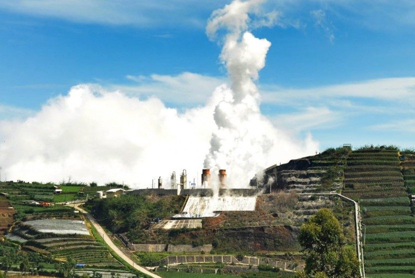

Pendahuluan
Dataran Tinggi Dieng dikenal sebagai kawasan dengan potensi energi panas bumi yang besar untuk pembangkit listrik tenaga panas bumi (PLTP). Namun pengembangan tambang panas bumi di wilayah ini juga memunculkan berbagai persoalan sosial, lingkungan, dan konflik agraria.
Transisi energi yang diklaim sebagai langkah menuju energi hijau ternyata menyisakan berbagai persoalan serius, mulai dari pencemaran lingkungan, ledakan sumur, hingga ancaman terhadap ruang hidup masyarakat lokal.
Bencana Industrial
Sejak tahun 1978 hingga 2022, berbagai tragedi industrial tercatat terjadi di kawasan panas bumi Dieng. Ledakan sumur, kebocoran gas H2S, hingga korban jiwa menjadi catatan panjang proyek eksploitasi energi ini.
- 1978: Ledakan sumur menewaskan 3 orang
- 1988: Tragedi Dieng-12 menewaskan 4 orang
- 2007: Pipa PLTP meledak dan melukai warga
- 2016: Ledakan sumur 30 menyebabkan korban pekerja
- 2022: Kebocoran gas H2S menewaskan pekerja
Pencemaran Air
Masyarakat Dusun Pawuhan dan Ngandam melaporkan perubahan kualitas air setelah aktivitas tambang panas bumi. Air berubah warna, berbau belerang, dan meninggalkan kerak.
Hasil penelitian laboratorium juga menemukan kandungan Boron, Besi, dan Mangan dalam kadar tinggi di beberapa sumber mata air.

Pencemaran Udara
Selain pencemaran air, paparan gas H2S menjadi ancaman serius bagi masyarakat sekitar. Beberapa titik menunjukkan kadar gas melebihi ambang aman.
Paparan jangka panjang dapat menyebabkan gangguan pernapasan, iritasi, dan risiko kesehatan lainnya.
Konflik Agraria
Perluasan proyek panas bumi membutuhkan lahan sangat luas. Hal ini memicu penolakan warga karena ancaman kehilangan tanah, ruang hidup, dan sumber ekonomi.
Masyarakat menilai proyek transisi energi belum sepenuhnya melibatkan partisipasi publik secara adil.
113.000 Hektar
Rencana perluasan proyek panas bumi Dieng.
Kesimpulan
Pengembangan tambang panas bumi di Dieng menunjukkan bahwa transisi energi tidak selalu berjalan adil. Di balik narasi energi hijau, terdapat persoalan ekologis, sosial, dan politik yang kompleks.
Pembangunan energi terbarukan harus mempertimbangkan hak masyarakat, keadilan lingkungan, dan keberlanjutan jangka panjang.